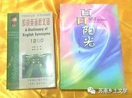
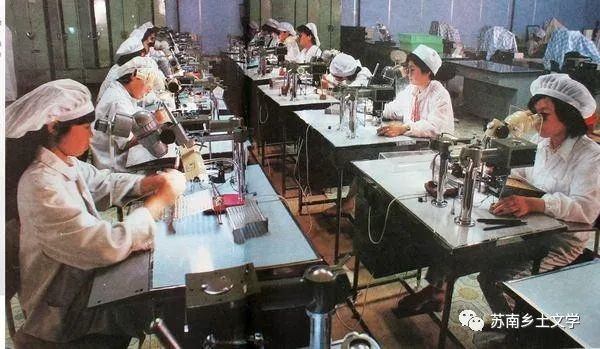
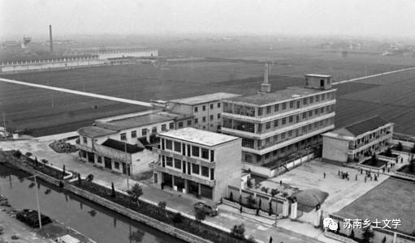

《百日阳光》
范小青
《百日阳光》是1997年12月江苏文艺出版社出版的图书，作者是范小青。
本书是一部探讨中国农民命运的书，透过乡镇企业的荣辱兴衰看到的是中国农民。
起始于平江农村而后影响带动了整个中国农村 改革发展的苏南乡镇企业，闯过了船小好调头、船大抗风浪、船大好远航以及船队集团化的风口浪尖，一下子跌落低谷，迷失了方向。
一、经济建设
1.苏南地区国民经济的飞速发展
平江，长江下游的一个中型城市，这些年来，国民经济的飞速发展，令人瞩目，到1993年，总产值一跃成为居京、津、沪之后的全国第四。
乡镇企业不仅给农村带来了翻天覆地的变化，也同样给城市带来了巨大的变革。
2.农村公共设施建设的改善（社会建设）
专程到省城接闻舒的平江市委副秘书长周怀说：“闻书记，这是金亭服务区。”
闻舒说：“这似乎不大像南方的农村，有点北方的味道了，开阔，壮观。”
周怀说：“这种建筑群，是学习西欧的风格建起来的，听说当初还争论过。”
许飞说：“服务区快餐生意好极了。”
3.乡镇企业的繁荣
但是他从来没有忘记桃花镇，梦回萦绕，桃花镇如今已是全国闻名的先进乡镇。
4.改革开放时代，苏南地区很多乡镇企业都是“摸着石头过河”
项达民说：“当初乡镇企业起步时，我们也都清楚面临的困难有多大，我们几乎是在做一件根本不可能做成功的事情，但是我们成功了……”“八十年代末，开始搞三资企业办洋厂的时候，我们这些人，基本上就是瞎子聋子哑子，什么也没有，什么也不懂，什么也不会，谁能想到，在一个小小的桃花镇，几年时间，竟然办成了一百多家三资企业！”
5.苏南许多古镇景观化、重建
桃花镇是一座著名的风景旅游古镇，镇上布满古迹名胜，在旅游旺季来桃花镇旅游的四方游客每天平均三千人次，如果建立了现代化的游乐场，将古老的景点和现代的游乐紧密结合，预计游客人数至少能增加两倍。
二、政策制度
1.知识青年就业包分配
三十年前，闻舒大学毕业，被分配到平江市平泽县下面一个公社的农高中教书，在那里一呆就是近十年。
2.知青下乡（插队）
流水村有个农高中毕业的年轻人，在村里插队知青的启发下，专门跑到上海。
三、文化建设
1.媒体新闻传播影响乡村的发展
卢狄继希望工程的报道后，又一次名扬平江，广大观众关注的话题、激烈的言辞、真实的场面，把大家的情绪调动起来了。
电视是主要的传媒。
徐晶说：“做电视广告，次数少了没有用，几次，十几次是不行的，至少三十次，才可能给观众留下较深刻的印象，收视率是非常重要的。”
2.苏南农村人在这个时代把物质追求放在首位（生产力）经济和文化的冲突
乡下的人认为，什么文化活动，又不增产粮食，又不增加收入，不搞也行，别来烦我吧，所以要搞活动不用跑到每个村去发动，盯住厂长也行，但是厂长比村支书更难弄，他是要抓生产的，你借了他的人，停了他的生产，他是要和你过不去的。
四、乡镇企业发展
1.苏南乡镇企业的崛起和发展：（例如，阳光、海澜集团都是苏南的乡镇企业，总部都位于江苏省江阴市新桥镇）
桃花镇丝织厂，就是现在的阳光国际集团。
阳光集团在桃花镇投资开发了阳光国际工业城，占地四平方公里，城内由阳光集团控股，投资的工业企业二十多家，集团下属的工厂生产的产品以出口国外为主，年创汇五千万美元。
2.改革的试点和典型
桃花镇是平江的典型，是全省的典型，也是全国的典型，对桃花镇的解剖，会对平江、甚至对全国都有非同一般的指导意义。
3.乡镇企业如何前进？如何摆脱困境？继续改革还是保持原样？
退回到十年前，甚至五年前，我不会说这样的话，在乡镇企业起步的时候，我们无法避免小农意识，我们这些人，包括项达民，也包括柏森林，包括我，本身都是小农意识的载体，所以我们无法超脱小农意识搞经济、搞建设，
但是现在不同了，社会进步了，物质发展了，我们仍然停留在从前的境界，这就注定要失败，注定要走弯路，到了今天，我可以坦率地说，在平江，缺少一大批具备搞现代化建设的优良素质的干部！如果把未来的希望寄托在项达民们身上，我看不到希望、看不到前途！”
“项达民的成功，是他懂得抓时机，懂得钻空子，也正是利用了社会改革还没有完善时的机制上的矛盾和漏洞，这并不能证明、甚至完全不能说明项达民是能够承担将改革进行到底重任的人选，他的思想，他的方式，都无法与进步的社会接轨！所以，他会有今天的困境，有今天面临崩溃的危险！”
乡镇企业是乡村现代化进程中不可忽视的重要方面，尤其在苏南地区，乡镇企业十分发达。海澜集团和阳光集团都是典型的乡镇企业崛起的代表。而且这与我们项目中的重点研究方面——经济（纺织业）有重要关联。
乡镇企业应该何去何从，如何继续发展，是否乡镇企业就无法脱离农民阶级的局限性？是不是只有人先提高自身素质能力，乡镇企业才能真正地发展？
我们又应该如何给乡镇企业的发展提供建议？这部作品体现出的乡镇企业的形象对现实是否具有指导意义？
这部作品让我们思考，今天的农民应该是什么样的。而且其中还提到了改革的试点与典型性问题，我想《百日阳光》是我们项目研究乡土文学中乡村形象和乡村现状对比非常适合的文本。